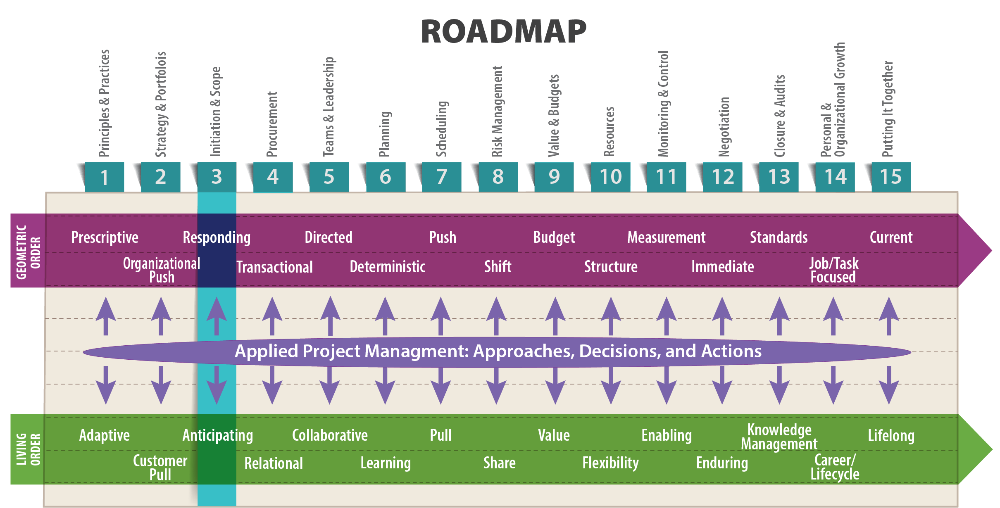
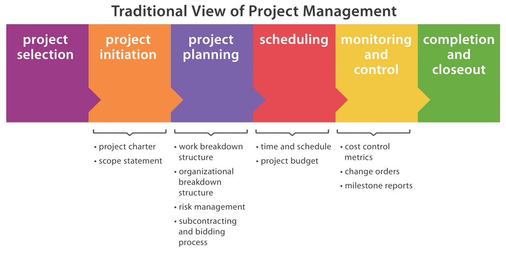
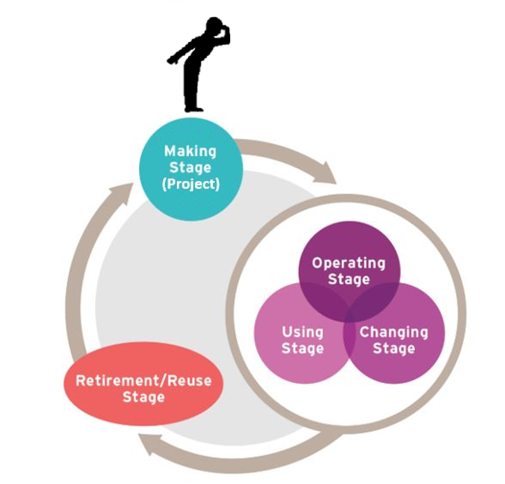
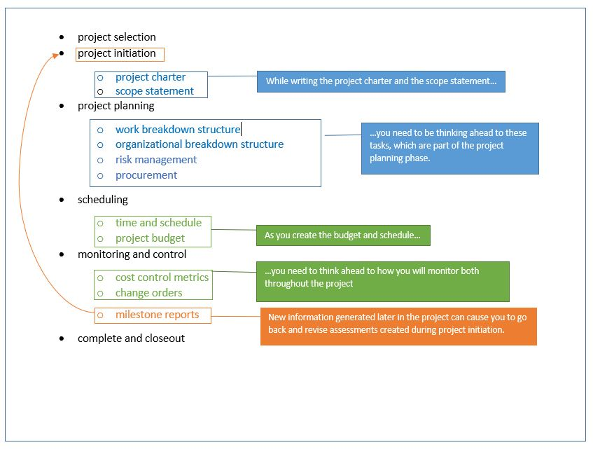
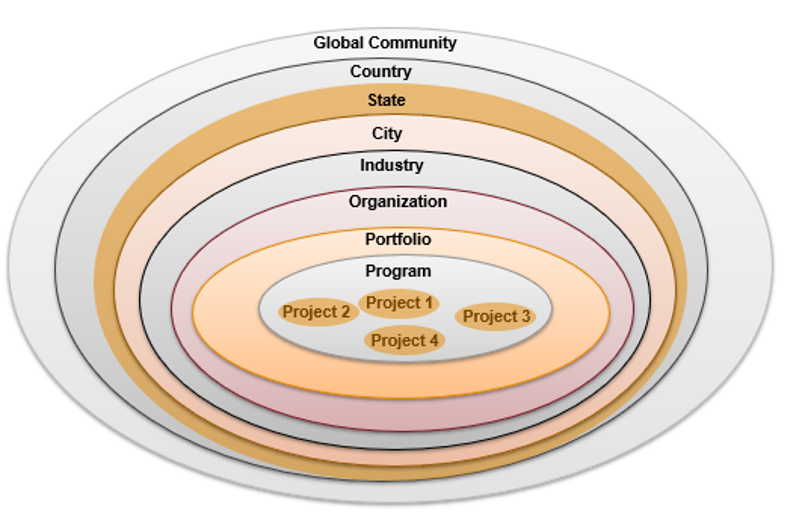

Planning without action is futile. Action without planning is fatal. —Anonymous

Objectives
After reading this lesson, you will be able to
The Big Ideas in This Lesson
Physics tells us that light is both particle and wave. Project management has a similarly dual nature; it is both a series of distinct phases with a clear beginning and end, and a continuous, circular process in which each ending leads to a new beginning. Throughout a project, a successful project manager strives to anticipate changing conditions , rather than simply responding to them as they arise.
Let’s start with the more traditional view, which describes project management as a series of sequential phases, with project initiation coming right after project selection. You can think of these phases, shown in Figure 3-1, as the particle nature of project management.

But while project initiation marks the official beginning of a project, doing it well also requires looking past the making stage to the entire life cycle of the project’s end result. You can think of this as the wave nature of project management. As illustrated in Figure 3-2, the making stage, in which a project is initiated and executed, is one part of the larger cycle that includes the operating/using/changing stage, in which the customer makes use of the project; and the demolishing stage, when the project is retired so it can be replaced by something new and better.

Taking this holistic, life-cycle view will encourage you to ask better questions about what “success” really means for your project. For example, as sustainability becomes an ever-present engineering concern, project managers often need to factor in long-term environmental effects when judging a project’s success. This entails the use of tools like life cycle assessments (LCA) for evaluating the “potential environmental impacts of a product, material, process, or activity” and for “assessing a range of environmental impacts across the full life cycle of a product system, from materials acquisition to manufacturing, use, and final disposition” (United States Environmental Protection Agency n.d.).
An LCA analysis early in the initiation phase can help to broaden your view of the potential effects of a project and to increase the range of options you consider as you set the project in motion. In the construction industry, LCAs often focus on energy and water use of a building’s life cycle. In product development, LCAs are used to assess the impacts of raw materials processing, production, packaging, and recycling, among other things. For an interesting example of an apparel industry analysis, see the following: “The Life Cycle of a Jean.”
An LCA is just one of many ways to kick-start the knowledge acquisition process that unfolds throughout a project. It’s not unusual to know little to nothing about a project at the start. By the time you finish, you know everything you wished you knew at the beginning, and you have acquired knowledge that you can carry forward to new projects. Anything you learn about a project is important, but the information you compile during initiation sets you up to respond to the living order uncertainty that will inevitably arise as the project unfolds. It can encourage you to look past the initiation phase to the project’s entire life cycle, and then to circle back using your new knowledge to take a more holistic approach to project initiation.
One of the best ways to learn about a project is to talk to everyone involved:
Making these conversations and analyses of needs a priority will give you a broader view of your project’s overall life cycle. Though of course, in the day-to-day running of a project, you can’t spend every minute looking ahead, you do have to pay attention to the traditional phases of project management, focusing on details like schedules and personnel. Even so, as you complete the tasks related to one phase, you often need to be thinking ahead to tasks related to a subsequent phase. Significant overlap between the various phases is common, as shown in Figure 3-3. You will often need to look back at and revise the information you compiled during the initiation phase as you learn more about the project.

Remember, a project is a learning acquisition activity. In most cases, what you know during project initiation is only a small fraction of what you will know when the project is finished. You have to be prepared to adapt as you learn more about your project.
During initiation you will typically create the first draft of the following items, which take a high-level view of the project:
Both the project charter and the scope statement typically evolve as the project unfolds and you learn more about the project details in the planning phase. This means that as you work through the initiation phase, you should always be thinking ahead to the following elements of the planning phase:
Experienced project managers know that you need to start fast by defining what “success” means for your project and determining how to measure it. To accomplish this, you need talk with the individuals and organizations who will determine whether the project is a success. This may include internal or external clients, individuals or groups with approval authority, or groups of potential customers. Many projects flounder when the engineers responsible say, “We met our objective. We followed the plan as written” but the customer says, “You didn’t provide what I wanted.”
Countless products have been released and subsequently discontinued because the specifications did not match the customers’ needs. One example is the 2013 release of Facebook Home, a user interface for the Android phone that turned Facebook into the user’s home screen, removing the features, such as docks and app folders, that Android users love. How could the company make such a huge mistake? According to Business Insider, the Facebook Home development team, composed primarily of iPhone users, “was unfamiliar with the features that a normal Android user might get used to, and might not want to lose when they installed Facebook Home” (Carlson 2013). This failure to learn about the customers’ needs had disastrous results. The price of the HTC First, the phone on which Facebook Home came preinstalled, dropped from $99 to 99 cents within a few weeks (Tate 2013). Ultimately, Time magazine named the HTC First one of the “lamest moments in tech” for 2013 (McCracken 2013).
In the medical device industry, a successfully developed product might eventually be considered a failure if the development team underestimates the hurdles to achieving FDA certification. And we can look to self-driving cars for an example of how success extends beyond the narrower scope of product completion. Self-driving cars exist, but they have to be able to successfully interact with unpredictable human drivers and they need to have governmental approval in order to become a successful project.
In capital projects, the total cost of ownership (the total of direct and indirect costs related to the construction and use of a building) is crucial to determining whether or not a building is a success. For example, if a building designed for use only during the Olympics ends up being used for years afterwards, the building’s maintenance costs will probably grow exponentially, transforming a supposedly successful building into a failure over the long term from the point of view of the host city. The key is realistically projecting the building’s total design life. The cost of maintenance also plays a part in the question of whether construction funded by donors can be considered a success. In such cases, success is often defined as the facility’s “grand opening” when it should really be defined as a fully funded operational infrastructure.
Successful project managers are typically very specific when they define project success. By contrast, new project managers make the mistake of being too general. However, being specific doesn’t necessarily mean being longwinded. By focusing on the end user’s needs rather than on generating an exhaustive catalogue of physical requirements, you will provide a concise, useful definition of “success” for your project. By taking this approach, Lee Evey, the manager of the Pentagon rebuilding project after the 9/11 attack, was able to consolidate thousands of pages of specifications into “16 performance-based requirements. For example, his energy-efficiency requirement was that the building not use more than a specific number of BTUs [British Thermal Units] to heat and cool the building per year. It was then up to the design-build teams to meet the requirement within the budget” (Rife 2005).
Traditional project managers tend to define success in terms of completing a project on time and within budget. But Lean presumes a more expansive definition of success—one that prioritizes eliminating waste and maximizing value, and in the process building customer loyalty that will extend to as-yet-unforeseen projects. The relentless focus on eliminating waste in the value stream has the corollary effect of keeping projects on schedule and within budget. It also tends to improve the quality of the final product, adding value that will actually benefit the customer. To learn more, see this thorough explanation of the history and usefulness of Lean in project management: “The Origins of Lean Project Management.”
In Agile development, a team agrees on its definition of intermediate success in the form of a sprint goal at every planning meeting. Success for the entire project is not measured in terms of being on time and on budget. Instead, in the spirit of the Agile manifesto, success means delivering “working software frequently”—software that the customer can actually use (Beedle et al. n.d.). Ultimately, success in Agile means delivering as much working software as the schedule and budget will allow. Agile coach Angela Johnson explains her vision of Agile success in this interesting blog post: “Defining Success Metrics for an Agile Project Methodology.”
Developing the project charter is one of the most important parts of project initiation. By including all key stakeholders in the process of creating it, you will help ensure agreement on what constitutes project success, relevant constraints (e.g., time and budget), and the definition of scope.
The exact form of a project charter will vary from one organization to another. At some companies, the project charter is a spreadsheet file; in others, a document file. You’ll find many templates for project charters available on the web. According to Managing Projects Large and Small: The Fundamental Skills for Delivering on Budget and on Time, a typical project charter contains some or all of the following:
Above all else, a project charter should be clear and specific about the project’s goals—that is, about the definition of success. The goals should be measurable, so there is no confusion about whether or not the project is a success:
Ambiguity on the goals can lead to misunderstandings, disappointment, and expensive rework. Consider this example of a broad-brush objective: “Develop a Web site that’s capable of providing fast, accurate, cost-effective product information and fulfillment to our customers.” That is how a sponsor might describe the project’s objective in the charter. But what exactly does it mean? What is “fast”? How should accuracy be defined? Is one error in 1,000 transactions acceptable, or would one error in 10,000 meet the sponsor’s expectations? To what degree must the site be cost effective? Each of those questions should be answered in consultation with the sponsor and key stakeholders. (Harvard Business School Publishing Corporation 2006, 4-5)
But while you want to be specific about the project goals, take care not to dwell on the precise details regarding how you will achieve those goals:
A thoughtful charter indicates the ends but does not specify the means. The means should be left to the project manager, team leader, and members. Doing otherwise—that is, telling the team what it should do and how to do it—would undermine any benefit derived from having recruited a competent team. (Harvard Business School Publishing Corporation 2006, 5)
Time, cost, and scope are known as the triple constraints of project management. It’s not possible to change one without changing at least one of the others. If the project takes twice as long as expected to complete, then the cost will almost certainly go up. On the other hand, a decision to cut costs, perhaps by using less experienced labor, could lead to a work slowdown, extending the schedule. Such a decision might also result in a change to the project’s scope, perhaps in the form of a lower quality product.
The initiation phase is too early in the project to nail down precise details about time and cost, but it is a good time to think long and hard about scope, which is “all of the work that needs to be done to provide the product or service your project is delivering” (Martinez n.d.). In this early stage, you and the project stakeholders might do some blue sky thinking about what your project could possibly achieve, without regard to the constraints of time, cost, and scope. But before too long you’ll need to zero in on a definition of the project’s scope, formalizing it as a scope statement, using the information currently available to you.
Except for the simplest projects, any scope definition will almost certainly evolve as you learn more about the project and the customer’s needs. The term scope evolution refers to changes that all stakeholders agree on, and that are accompanied by corresponding changes in budget and schedule. Scope evolution is a natural result of the kind of learning that goes on as a project unfolds—for example, learning that arises from fresh insights into the needs of the end user, new regulations, or upheaval in the marketplace. As long as all stakeholders agree on the scope changes (and the associated changes to the budget and schedule), scope evolution ensures that customers actually get what they want out of the project. The more you talk with the client and learn about their needs, the more you will be able to refine the scope.
Indeed, one of the main jobs of a project manager is managing scope evolution. But different types of projects will involve varying amounts of scope evolution. For example, if you’re working on a project related to satisfying a specific environmental regulation, the initial definition of the project’s scope might be clear, requiring little refinement as the project unfolds, as long as the regulation itself is not altered. But if you are working on a product designed to satisfy a brand-new market demand, you might need to refine the scope continually to ensure that you satisfy your customers’ needs.
Perhaps the most common cause of scope evolution is a change in the context in which a project is planned and executed. Alterations in market forces, changing demographics, new or more vigorous competition, and technological advancements can all change a project’s context, forcing you to rethink its scope. This potential for changing contexts means that no two projects are the same. You might think Project B is nearly identical to Project A, but then a sudden shift in context can change everything. As shown in Figure 3-4, context is largely defined by the organizational, social, and political structures in which a project occurs.

While you need to stay open to the possibility of scope evolution, it’s essential to resist scope creep, an uncontrolled cascade of changes to the scope with no corresponding authorized changes in budget and schedule. The difference between the two is the difference between managed and unmanaged change:
The key to managing scope is a carefully crafted scope statement, which should be clear and precise. The details of how you plan to carry out a project may be vague at first, but want you want to achieve should be perfectly clear. Vagueness can lead to small changes to the project’s scope, which in turn lead to other changes, and so on, until the original project is no longer recognizable.
Writing a scope statement, the document that defines the project’s scope, is a major part of the initiation phase. However, according to Brad Bigelow in an article for the Project Management Institute, it is “usually expressed in qualitative terms that leave room for interpretation and misunderstanding. Consequently, it’s often the biggest source of conflicts in a project” (2012, 1).
To avoid such problems, experienced project managers put a lot of effort into learning what should and shouldn’t be included in the project, and then articulating these boundaries as clearly as possible in the form of a scope statement. According to Bigelow, this work is essential to ensuring a project’s success: “No project’s scope can ever be entirely free of fuzziness—free from subjectivity and imperfect definitions—as long as human beings are involved. On the other hand, it’s also highly improbable that any project will ever survive initiation if its scope is entirely vague, undefined, and subject to unpredictable expectations” (2).
If the scope is poorly defined, then what is or isn’t within the project scope is reduced to a matter of perspective. Not surprisingly, these “different perspectives…can often be the root of conflicts within a project” (2). Bigelow describes a project in which the team and the customer see things very differently:
A project team may, for example, propose to prepare three prototypes to refine the customer’s requirements and reduce production risks. The customer may reject this proposal as out of scope…. Because the prototypes are expendable and will not be considered finished products, the customer may refuse to consider them as deliverables. And if he perceives that prototyping delays final production and consumes resources that could be better used, he may reject the activity as outside the acceptable extent of project work. (2)
When the scope is poorly defined, satisfying the customer can grow increasingly difficult, with the team going off and creating what it thinks the customer wants, only to be told, “No, that’s not it.”
Opinions vary on exactly what a scope statement should include, but at the very least it should contain the following:
A successful project manager is skilled at guiding customers, who simply may not know what they want until they see it. For truly innovative products, customers may not even be able to define what they want. An adage attributed to Henry Ford sums this up neatly: “If I had asked people what they wanted, they would have said faster horses.” The Sony Walkman was not created to satisfy any identified consumer demand for portable music, but in response to a request from Sony Co-founder Masaru Ibuka for a convenient way to listen to opera. A Sony designer got to work on the special request, and the result was one of Sony’s most successful products of all time (Franzen 2014).
When developers at Facebook introduced Facebook Home, they thought they were guiding their customers to a new way of using their mobile phones, just as Sony guided their customers to a new way of listening to music. But because the Facebook developers knew so little about the needs of their Android-using customers, they ended up creating a useless product. The moral of the story: before you attempt to guide your customers, make sure you understand their needs.
Here are a few other tips to keep in mind when thinking about scope:
Michael Mucha is Chief Engineer and Director for the Madison Metropolitan Sewerage District, serves as the current Chair for ASCE’s Committee on Sustainability, and also serves on the Sustain Dane Board of Directors in Madison, Wisconsin. He explains that a project’s scope is determined by the kind of problem you’re trying to solve. Is it technical—with a clear-cut solution that engineers are traditionally trained to provide? Or is it adaptive—with no definite consensus on how to proceed, with every solution guaranteed to challenge stakeholders’ values and beliefs? Or is it a mix of both?
Sustainable engineering solutions often involve adaptive challenges. As an example, he describes a recent project:
We needed to upgrade a waste water pumping station between the Madison’s Marshall Park boat ramp and a busy bike path. Building the station itself was a technical problem. If we were working in a total vacuum, we could have built it a certain size and capacity and been done with it. But to build this pumping station in such a busy area, one that people had strong feelings about, we had to take an adaptive approach. This meant focusing on providing social benefits, such as public restrooms, two aquatic invasive species boat wash hydrants, and a bike repair station. But we also worked to educate the public about the larger importance of waste water treatment. For example, one simple way to get someone’s attention is to explain that, when you flush the toilet, the water travels to the Gulf of Mexico in 40 days. Once you know that, you might be inclined to see a pumping station as part of a larger story—a way to help protect the global environment.
In other words, the problem shifted from a technical to an adaptive challenge. Building a pumping station is very straight forward. You could spell out all the steps in a manual. That’s the technical part. But there is no manual for solving an adaptive problem. It involves changing people’s belief and values. In the case of the pumping station, we wanted to change people’s ideas about how they think about waste water, so they would see the work on the station as part of something larger. (Mucha 2017)
The distinction between adaptive and technical problems was first spelled out by Ronald A. Heifetz in his 1998 book Leadership Without Answers. For a hands-on, practical introduction to the topic, Mucha recommends The Practice of Adaptive Leadership (Heifetz, Linsky and Grashow 2009).
According to Merriam-Webster, the term context refers to “the situation in which something happens: the group of conditions that exist where and when something happens.” All projects occur within multiple contexts—within an organizational context (both yours and the customer’s), a market context, a technical context, and a social context. All of these can change over the life of a project, and in the permanent whitewater of the modern business world, they probably will. Good project managers pay attention to changing context. They realize that, as contexts change, the project will probably need to be adjusted. Completing the project in accordance with the original objectives could end up being a terrible outcome, if it turns out that the original objectives no longer fit the context of the organization.
The potential for changing contexts means that no two projects are the same. Even if you think you’ve completed an identical project recently, you’ll almost certainly find that differences in context will force you to alter your approach in some way or another. For example, the fact that you successfully built a hospital in Detroit can’t completely prepare you for the experience of building a hospital in San Francisco, where the area’s volatile seismic activity means you need to consider a host of issues related to earthquake-resistance. In product development, you might find that the customer did not fully understand their needs at the outset. As you begin to learn what the customer wants, you might see the project in a much broader, more complicated context. Likewise, the introduction of new technology can increase the complexity of a project in ways you couldn’t foresee during initiation. To deal with these changes, you need to be able to rely on a flexible project team that can adapt as the project unfolds.
An article by James Kanter in the New York Times describes the construction of two European nuclear power plants that were supposed to be “clones” of each other, with both built according to rigid standards specifying every aspect of the projects down to “the carpeting and wallpaper.” The similarity of the projects was supposed to lead to clear sailing for both, but a host of unforeseen technical problems resulted in major delays and cost overruns. This is a perfect example of how contexts—one reactor was in Finland, the other in France—can dramatically affect the outcomes of supposedly identical projects. Problems at the Finnish site included a foundation that was too porous and therefore likely to corrode, inexperienced subcontractors drilling holes in the wrong places, and communication problems arising from a workforce composed of people speaking eight different languages. At the supposedly identical French site, a different array of problems included cracks in the concrete base, incorrectly positioned steel reinforcements, and unqualified welders. According to UniStar Nuclear Energy, the company behind the Finnish and French projects, a fleet of similar reactors are in the works around the world. Who knows what risks will arise on those projects. After all, France and Finland are at least stable, geologically speaking. But as Kanter points out, “Earthquake risks in places like China and the United States or even the threat of storm surges means building these reactors will be even trickier elsewhere” (2009).
Context is especially important in product development, where the backdrop for a new product can change overnight. In a paper arguing for a more flexible approach to product development, M. Meißner and L. Blessing discuss the many ways context influences the product development process:
Designers are influenced by the society in which they live, and their decisions depend on political, social, and financial pressures. The technological environment and the accelerating rate of change is a characteristic of modern times. Changing conditions produce new needs and thereby encourage new developments, innovation is rewarded, and new artifacts are created. Some products require design activity on a far larger scale than others.
Huge one-off products such as power plants or oil platforms require an immense and skillfully organized design operation. Less complex products such as hand tools or toys can be designed by a single person…. The designer could be working in a small company, carrying a variety of responsibilities including the marketing, design, and manufacturing of the product. Or he could be working in a larger company where many people work on a single design project with specified areas of activity and a hierarchy of responsibilities. (70)
In changing contexts, flexibility is key. In his studies of successful project managers, Alexander Laufer found that the best project managers
deviate from the common “one best way” approach and adjust their practices to the specific context of their project. Avoiding the “one best way” approach does not imply, however, that there are no “wrong ways,” that “anything goes,” or that you must always “start from scratch.” There is always the need to strike a balance between relying on the accumulated knowledge of the organization, on the one hand, and enhancing the flexibility and creativity within each individual project on the other. (216)
Laufer argues that modern project managers need to employ a modern, more flexible approach than their predecessors:
The classical model of project management, in which standards are developed for virtually all situations, expects the project manager to serve primarily as a controller: to ensure that team members adhere to the established standard. This role entails only a minimal requirement for judgment and no requirement for adaptation. In reality, the project manager must constantly engage in making sense of the ambiguous and changing situation, and he must adjust the common practices to the unique situation. This process requires a great deal of interpretation and judgment based on rich experience. (218)
In Lesson 5, we’ll talk about the value of building diverse teams that bring together people with complementary skills—ideally, people of varying ages and levels of experience. But how can new project managers, who lack that all-important “rich experience,” increase their overall understanding of their projects’ multiple contexts? Start by researching past projects with similar characteristics, consulting with mentors, and, generally, checking as many formal and informal sources regarding lessons learned from previous projects as you can find. It also helps to stay well-informed—about your organization, your customers, your industry, and the world in general. For instance, if you were working on a construction project in the healthcare field in the past decade, you would have experienced a pronounced change in context, away from a doctor-centered system to a patient-centered system that seeks to empower patients to define value on their terms (Porter and Lee 2013). If you were new to managing projects in that field, you would be wise to learn all you could about that shift. In the living order, such seismic changes are the norm, not the exception, in nearly all industries.
Beedle, Mike, Arie van Bennekum, Alistair Cockburn, Ward Cunningham, Martin Fowler, Jim Highsmith, Andrew Hunt, et al. n.d. “Principles behind the Agile Manifesto.” AgileManifesto. Accessed June 16, 2018. http://agilemanifesto.org/principles.html.
Bigelow, Brad. 2012. “Scope–Mastering the Fuzzy Constraint.” Project Management Institute. Accessed June 16, 2018. http://www.pmi.org/~/media/Members/Requirements-Management/Scope%20Mastering%20the%20Fuzzy%20ConstraintBigelow.ashx.
Bradley, Jeremy. n.d. “What Is an Organizational Breakdown Structure (OBS)?” Chron. Accessed June 16, 2018. http://smallbusiness.chron.com/organizational-breakdown-structure-obs-72523.html.
Business Dictionary. n.d. “Externalities.” BusinessDictionary. Accessed June 16, 2018. http://www.businessdictionary.com/definition/externalities.html.
—. n.d. “Work breakdown structure (WBS).” BusinessDictionary. Accessed June 16, 2018. http://www.businessdictionary.com/definition/work-breakdown-structure-WBS.html.
Carlson, Nicholas. 2013. “Facebook’s New Mobile Product Is A Huge Flop Because It Was Built By iPhone Users.” Business Insider, May 13. http://www.businessinsider.com/facebook-made-a-simple-huge-mistake-building-home-which-looks-like-a-bigger-flop-by-the-second-2013-5.
Doglione, Cara. 2018. “Understanding Responsibility Assignment Matrix (RACI Matrix).” PM. January 25. http://project-management.com/understanding-responsibility-assignment-matrix-raci-matrix/.
Feldsher, Roni. 2016. “What to include in a project scope statement.” Clarizen. July 9. https://www.clarizen.com/what-to-include-in-a-project-scope-statement/.
Franzen, Carl. 2014. “The history of the Walkman: 35 years of Iconic Music Players.” The Verge, July 1. http://www.theverge.com/2014/7/1/5861062/sony-walkman-at-35.
Friedman, Thomas L. 2005. The World is Flat: A Brief History of the Twenty-first Century. New York: Farrar, Straus and Giroux. https://books.google.com/books?id=-mv_ryTuvo0C&pg=PA418&lpg=PA418&dq=well+educated+workforce+in+Ireland+results&source=bl&ots=xgXHeV0Ozx&sig=JoHGEs28SPnl9ZgKqUcsZusucbs&hl=en&sa=X&ved=0ahUKEwj9hYvBlL_YAhVJ94MKHdStCE4Q6AEIUjAG#v=onepage&q=well%20educated%2.
Harvard Business School Publishing Corporation. 2006. Managing Projects Large and Small: The Fundamental Skills for Delivering on Budget and on Time. Boston: Harvard Business School Publishing Corporation.
Heifetz, Ronald A., Marty Linsky, and Alexander Grashow. 2009. The Practice of Adaptive Leadership: Tools and Tactics for Changing Your Organization and the World. Boston: Harvard Business Press.
Hill, Andrew. 2016. How to Avoid Idea Averaging: Let only the best ideas through. January 4. http://andrewxhill.com/blog/2016/01/04/idea-averaging/.
Investopedia. n.d. “deliverables.” Investopedia. Accessed June 15, 2018. https://www.investopedia.com/terms/d/deliverables.asp.
—. n.d. “externality.” Investopedia. Accessed June 15, 2018. https://www.investopedia.com/terms/e/externality.asp.
Jordan, Andy. 2012. “The 9 Secrets of Successful Project Initiation.” ProjectManagement.com. March. http://www.projectmanagement.com/pdf/attaskinitiation.pdf.
Kanter, James. 2009. “In Finland, Nuclear Renaissance Runs Into Trouble.” The New York Times, May 28. http://www.nytimes.com/2009/05/29/business/energy-environment/29nuke.html?_r=0.
Martinez, Michael. n.d. Project Management Scope. Accessed June 16, 2018. https://www.project-management-skills.com/project-management-scope.html.
McCracken, Harry. 2013. “This Dumb Year: The 47 Lamest Moments in Tech 2013.” Time, December 31. http://techland.time.com/2013/12/31/this-dumb-year-the-47-lamest-moments-in-tech-2013/.
Meißner, M., and L. Blessing. 2006. “Defining an Adaptive Product Development Methodology.” Proceedings of the DESIGN 2006 International Design Conference. Dubrovnik, Croatia: Design Society. 69-78.
Mucha, Michael, interview by Ann Shaffer. 2017. Technical and Adaptive Problems (December 11).
OptiSol. n.d. “What is Scope Creep in Agile Development?” Optisol Business. Accessed June 17, 2018. https://www.optisolbusiness.com/insight/what-is-scope-creep-in-agile-development.
Porter, Michael E., and Thomas Lee, MD Lee. 2013. “The Strategy That Will Fix Health Care.” Harvard Business Review, October. https://hbr.org/2013/10/the-strategy-that-will-fix-health-care.
Portny, Stanley E. n.d. “What to Include in a Project Scope Statement.” Dummies. Accessed June 15, 2018. http://www.dummies.com/careers/project-management/what-to-include-in-a-project-scope-statement/.
Richter, Linda. 2014. “What Is a Project Charter?” Bright Hub Project Management. October 24. http://www.brighthubpm.com/project-planning/5161-what-is-a-project-charter/.
Rife, Matt. 2005. “Pentagon Rebuild is Modern-Day Study in Design-Build Construction Method.” Austin Business Journal, November 13. http://www.bizjournals.com/austin/stories/2005/11/14/focus3.html.
Tate, Ryan. 2013. “Facebook Home Will be a “Huge Flop” Until It’s Not.” Wired, May 14. http://www.wired.com/2013/05/facebook-home-criticism/.
TechTarget. n.d. “business case.” WhatIs. Accessed June 16, 2018. http://whatis.techtarget.com/definition/business-case.
United States Environmental Protection Agency. n.d. Design for the Environment Life-Cycle Assessments. Accessed June 16, 2018. https://www.epa.gov/saferchoice/design-environment-life-cycle-assessments.
Wrike. n.d. “Project Management Guide/What is a Work Package in Project Management?” Wrike. Accessed June 16, 2018. https://www.wrike.com/project-management-guide/faq/what-is-a-work-package-in-project-management/.